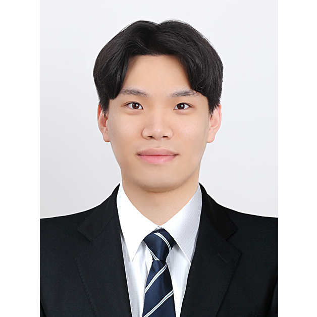

Team TIDYBOY
Biointelligence Lab, Seoul National University
Autonomous Robotics and Artificial Intelligence Lab, Pusan National University
- Principal Investigator
 |
Prof. Byoung-Tak Zhang Contact : btzhang@bi.snu.ac.kr Research Area : Cognitive Robotics, Episodic Memory, Hypernetworks |
| Prof. Seung-Joon Yi Contact : seungjoon.yi@pusan.ac.kr Research Area : Machine Learning, Autonomous Robotics |
- Participants
- Support Members
| Jaemoon Park Contact : jmpark@bi.snu.ac.kr Research Area : Vision language & Continual learning |
| Taeyeong Kim Contact : whitenor1@snu.ac.kr Research Area : Reinforcement Learning & Robotics |
| Byungju Kim Contact : kbj5986@snu.ac.kr Research Area : Robot Grasping |
| Jaebong Yi Contact : niteofhunter@pusan.ac.kr Research Area : Quadruped robots, Machine learning, and Manipulator |
| Taewoong Kang Contact : touy1@pusan.ac.kr Research Area : Legged robots, Intelligent service robots |
|  | Dongwoon Song Contact : Dongwoon@pusan.ac.kr Research Area : Robot automation & Smart Factory |
| Joonyoung Kim Contact : kjykjy98@pusan.ac.kr Research Area : Legged robots & Service robots |
| Shady Nasrat Contact : shadyloai@pusan.ac.kr Research Area : Quadruped robots & Machine learning |
 |
Youngjae Yoo Contact : yjyoo@bi.snu.ac.kr Research Area : 3D Vision for manipulation robot, Self-learning machine |
 |
Jaein Kim Contact : jykim@bi.snu.ac.kr Research Area : Simultaneous planning of robot base at home environment |
 |
Minji Kim Contact : mjkim@bi.snu.ac.kr Research Area : Reinforcement learning & Robot learning |
 |
Hyejung Yoon Contact : hjyoon@bi.snu.ac.kr Research Area : Learning by conversation with robot |
| Juno Kim Contact : jokim@bi.snu.ac.kr Research Area : Reinforcement learning & Vision language with robot |
| Yesol Park Contact : yspark@bi.snu.ac.kr Research Area : Reinforcement learning & Robot learning |
| Seunghyun Lim Contact : shlim@bi.snu.ac.kr Research Area : Visual perception for mobile manipulation robot |
 |
Sujin Jeon Contact : sjjeon@bi.snu.ac.kr Research Area : Visual calibration for mobile manipulation robot |